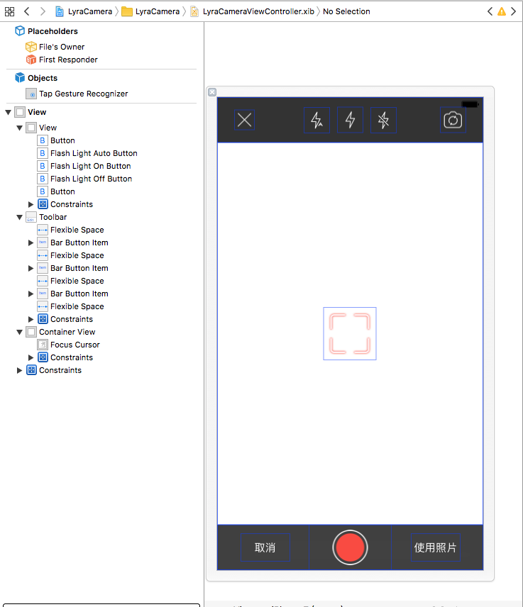

iOS:视频录制与合成
iOS自定义相机进行视频录制与合成
前言
之前实现了自定义相机来进行拍照，与系统相机的区别也只在于界面UI可以进行自定义。
但是如果需求是录像，并对录像进行合成或者美化的话，系统相机就无法满足需求，本文我们在自定义相机的基础上，进行视频录制合成的实现。
在这里我们使用AVCaptureMovieFileOutput作为输出流，这只是视频录制的一种方式；
我们同样可以使用AVCaptureVideoDataOutput加上AVCaptureAudioDataOutput来进行视频录制；
这里我们使用AVAsset来进行视频合成剪裁，出于篇幅考虑，暂不进行详细解释，
同样，我们可以使用AVAssetWriter加上AVAssetWriterInput来进行合成剪裁；
区别在于，AVCaptureVideoDataOutput，AVCaptureAudioDataOutput配合AVAssetWriter，AVAssetWriterInput的方式更精确与细致，可以操控到录制输出过程中的每个细节。
界面
视频录制这里的界面我使用的和相机摄像是同一个界面，只要把相应按钮状态，文字做一些改变，最后再添加一个用于显示时间的Label即可，让我们再看一下相机摄像的界面：

实现
设计
视频录制与合成，我把它拆分为三个类
- VideoRecordDevice设备类；
- VideoMergeUtil视频合成类；
- VideoViewController控制器类。
不同于相机摄像中，使用的AVCaptureStillImageOutput作为照片输出，在这里我们要处理的是音视频数据，区别与静态图片，我们要使用AVCaptureMovieFileOutput作为输出流；
在摄像机中，我们只有一个输入设备和输入流，音视频有两个输入流，AVCaptureDeviceInput deviceInput设备输入 和 AVCaptureDeviceInput audioDeviceInput音频输入；
设备类VideoRecordDevice
接口：
~~~objective-c
#import <Foundation/Foundation.h>
#import <UIKit/UIKit.h>
#import <AVFoundation/AVFoundation.h>
@interface VideoRecordDevice : NSObject
/// AVCaptureSession 负责输入和输出设置之间的数据传递
@property (nonatomic, strong) AVCaptureSession * session;
/// AVCaptureDeviceInput 负责从AVCaptureDevice获得输入数据 设备输入
@property (nonatomic, strong) AVCaptureDeviceInput * deviceInput;
/// AVCaptureDeviceInput 负责从AVCaptureDevice获得输入数据 音频输入
@property (nonatomic, strong) AVCaptureDeviceInput * audioDeviceInput;
/// AVCaptureStillImageOutput 视频输出流
@property (nonatomic, strong) AVCaptureMovieFileOutput * movieFileOutPut;
/// AVCaptureVideoPreviewLayer 拍摄预览图层
@property (nonatomic, strong) AVCaptureVideoPreviewLayer * videoPreviewLayer;
/**
* 配置预览层,将视频预览层添加到界面中
*/
- (void)configPreviewLayerInView:(UIView *)view belowView:(UIView *)belowView;
/**
* 开启会话
*/
- (void)deviceStart;
/**
* 停止会话
*/
- (void)deviceStop;
/**
* 设置闪光灯模式
*
* @param flashMode 闪光灯模式
*/
- (void)setFlashMode:(AVCaptureFlashMode )flashMode;
/**
* 获取闪光灯状态
*/
- (void)getFlashMode:(void(^)(BOOL flashAvailable, AVCaptureFlashMode flashMode))flashModeCallback;
/**
* 点按手势，点按时聚焦
*/
- (void)tapScreenPoint:(CGPoint)point;
/**
* 切换摄像头
*/
- (void)cameraToggle;
@end
~~~属性懒加载
~~~objective-c
#pragma mark - Lazy Loading
- (AVCaptureSession *)session {
if (!_session) {
/// 初始化会话
_session = [[AVCaptureSession alloc] init];
/// 设置分辨率
if ([_session canSetSessionPreset:AVCaptureSessionPresetHigh]) {
_session.sessionPreset = AVCaptureSessionPresetHigh;
}
}
return _session;
}
- (AVCaptureDeviceInput *)deviceInput {
if (!_deviceInput) {
/// 获得输入设备 取得后置摄像头
AVCaptureDevice * captureDevice = [self getCameraDeviceWithPosition:AVCaptureDevicePositionBack];
if (!captureDevice) {
NSLog(@"取得后置摄像头出错");
}
/// 根据输入设备初始化设备输入对象，用于获得输入数据
NSError *error=nil;
_deviceInput = [[AVCaptureDeviceInput alloc]initWithDevice:captureDevice error:&error];
if (error) {
NSLog(@"取得设备输入对象时出错，错误原因：%@",error.localizedDescription);
}
}
return _deviceInput;
}
- (AVCaptureDeviceInput *)audioDeviceInput {
if (!_audioDeviceInput) {
/// 添加一个音频输入设备
AVCaptureDevice * audioDevice = [[AVCaptureDevice devicesWithMediaType:AVMediaTypeAudio] firstObject];
/// 根据音频输入设备初始化设备输入对象
NSError *error=nil;
_audioDeviceInput = [[AVCaptureDeviceInput alloc] initWithDevice:audioDevice error:&error];
if (error){
NSLog(@"取得音频设备输入对象时出错，错误原因：%@",error.localizedDescription);
};
}
return _audioDeviceInput;
}
- (AVCaptureMovieFileOutput *)movieFileOutPut {
if (!_movieFileOutPut) {
/// 初始化设备输出对象，用于获得输出数据
_movieFileOutPut = [[AVCaptureMovieFileOutput alloc] init];
}
return _movieFileOutPut;
}
- (AVCaptureVideoPreviewLayer *)videoPreviewLayer {
if (!_videoPreviewLayer) {
/// 创建视频预览层，用于实时展示摄像头状态
_videoPreviewLayer =[[AVCaptureVideoPreviewLayer alloc] initWithSession:self.session];
/// 填充模式
_videoPreviewLayer.videoGravity = AVLayerVideoGravityResizeAspectFill;
}
return _videoPreviewLayer;
}
~~~通知：
~~~objective-c
#pragma mark - 通知
/**
* 给输入设备添加通知
*/
- (void)addNotificationToCaptureDevice:(AVCaptureDevice *)captureDevice {
//注意添加区域改变捕获通知必须首先设置设备允许捕获
[self changeDeviceProperty:^(AVCaptureDevice *captureDevice) {
captureDevice.subjectAreaChangeMonitoringEnabled=YES;
}];
NSNotificationCenter *notificationCenter= [NSNotificationCenter defaultCenter];
//捕获区域发生改变
[notificationCenter addObserver:self selector:@selector(areaChange:) name:AVCaptureDeviceSubjectAreaDidChangeNotification object:captureDevice];
}
- (void)removeNotificationFromCaptureDevice:(AVCaptureDevice *)captureDevice {
NSNotificationCenter *notificationCenter= [NSNotificationCenter defaultCenter];
[notificationCenter removeObserver:self name:AVCaptureDeviceSubjectAreaDidChangeNotification object:captureDevice];
}
/**
* 移除所有通知
*/
- (void)removeNotification {
NSNotificationCenter *notificationCenter= [NSNotificationCenter defaultCenter];
[notificationCenter removeObserver:self];
}
- (void)addNotificationToCaptureSession:(AVCaptureSession *)captureSession {
NSNotificationCenter *notificationCenter= [NSNotificationCenter defaultCenter];
//会话出错
[notificationCenter addObserver:self selector:@selector(sessionRuntimeError:) name:AVCaptureSessionRuntimeErrorNotification object:captureSession];
}
/**
* 设备连接成功
*
* @param notification 通知对象
*/
- (void)deviceConnected:(NSNotification *)notification {
NSLog(@"设备已连接...");
}
/**
* 设备连接断开
*
* @param notification 通知对象
*/
- (void)deviceDisconnected:(NSNotification *)notification {
NSLog(@"设备已断开.");
}
/**
* 捕获区域改变
*
* @param notification 通知对象
*/
- (void)areaChange:(NSNotification *)notification {
NSLog(@"捕获区域改变...");
}
/**
* 会话出错
*
* @param notification 通知对象
*/
- (void)sessionRuntimeError:(NSNotification *)notification {
NSLog(@"会话发生错误.");
}
~~~初始化：
~~~objective-c
- (instancetype)init {
if (self = [super init]) {
[self configSession];
}
return self;
}
- (void)dealloc {
[self removeNotification];
}
- (void)configSession {
// 将设备输入对象添加到会话中
if ([self.session canAddInput:self.deviceInput]) {
[self.session addInput:self.deviceInput];
[self.session addInput:self.audioDeviceInput];
AVCaptureConnection * connection = [self.movieFileOutPut connectionWithMediaType:AVMediaTypeVideo];
if ([connection isVideoStabilizationSupported]) {
connection.preferredVideoStabilizationMode = AVCaptureVideoStabilizationModeAuto;
}
}
// 将设备输出对象添加到会话中
if ([self.session canAddOutput:self.movieFileOutPut]) {
[self.session addOutput:self.movieFileOutPut];
}
AVCaptureDevice * captureDevice = [self.deviceInput device];
[self addNotificationToCaptureDevice:captureDevice];
}
~~~PublicMethods：
~~~objective-c
#pragma mark - Public
/**
* 配置预览层,将视频预览层添加到界面中
*/
- (void)configPreviewLayerInView:(UIView *)view belowView:(UIView *)belowView {
CALayer *layer = view.layer;
layer.masksToBounds=YES;
self.videoPreviewLayer.frame=layer.bounds;
[layer insertSublayer:self.videoPreviewLayer below:belowView.layer];
}
/**
* 开启会话
*/
- (void)deviceStart {
[self.session startRunning];
}
/**
* 停止会话
*/
- (void)deviceStop {
[self.session stopRunning];
}
/**
* 设置闪光灯模式
*
* @param flashMode 闪光灯模式
*/
- (void)setFlashMode:(AVCaptureFlashMode )flashMode {
[self changeDeviceProperty:^(AVCaptureDevice *captureDevice) {
if ([captureDevice isFlashModeSupported:flashMode]) {
[captureDevice setFlashMode:flashMode];
}
}];
}
/**
* 设置闪光灯按钮状态
*/
- (void)getFlashMode:(void(^)(BOOL flashAvailable, AVCaptureFlashMode flashMode))flashModeCallback {
AVCaptureDevice *captureDevice = [self.deviceInput device];
AVCaptureFlashMode flashMode = captureDevice.flashMode;
flashModeCallback([captureDevice isFlashAvailable], flashMode);
}
/**
* 点按手势，点按时聚焦
*/
- (void)tapScreenPoint:(CGPoint)point {
//将UI坐标转化为摄像头坐标
CGPoint cameraPoint = [self.videoPreviewLayer captureDevicePointOfInterestForPoint:point];
[self focusWithMode:AVCaptureFocusModeAutoFocus exposureMode:AVCaptureExposureModeAutoExpose atPoint:cameraPoint];
}
/**
* 切换摄像头
*/
- (void)cameraToggle {
AVCaptureDevice *currentDevice=[self.deviceInput device];
AVCaptureDevicePosition currentPosition=[currentDevice position];
[self removeNotificationFromCaptureDevice:currentDevice];
AVCaptureDevice *toChangeDevice;
AVCaptureDevicePosition toChangePosition=AVCaptureDevicePositionFront;
if (currentPosition==AVCaptureDevicePositionUnspecified||currentPosition==AVCaptureDevicePositionFront) {
toChangePosition=AVCaptureDevicePositionBack;
}
toChangeDevice=[self getCameraDeviceWithPosition:toChangePosition];
[self addNotificationToCaptureDevice:toChangeDevice];
//获得要调整的设备输入对象
AVCaptureDeviceInput *toChangeDeviceInput=[[AVCaptureDeviceInput alloc]initWithDevice:toChangeDevice error:nil];
//改变会话的配置前一定要先开启配置，配置完成后提交配置改变
[self.session beginConfiguration];
//移除原有输入对象
[self.session removeInput:self.deviceInput];
//添加新的输入对象
if ([self.session canAddInput:toChangeDeviceInput]) {
[self.session addInput:toChangeDeviceInput];
self.deviceInput=toChangeDeviceInput;
}
//提交会话配置
[self.session commitConfiguration];
}
~~~PrivateMethods：
~~~objective-c
#pragma mark - 私有方法
/**
* 取得指定位置的摄像头
*
* @param position 摄像头位置
*
* @return 摄像头设备
*/
- (AVCaptureDevice *)getCameraDeviceWithPosition:(AVCaptureDevicePosition )position {
NSArray *cameras= [AVCaptureDevice devicesWithMediaType:AVMediaTypeVideo];
for (AVCaptureDevice *camera in cameras) {
if ([camera position]==position) {
return camera;
}
}
return nil;
}
/**
* 改变设备属性的统一操作方法
*
* @param propertyChange 属性改变操作
*/
- (void)changeDeviceProperty:(void(^)(AVCaptureDevice *captureDevice))propertyChange {
AVCaptureDevice *captureDevice= [self.deviceInput device];
NSError *error;
//注意改变设备属性前一定要首先调用lockForConfiguration:调用完之后使用unlockForConfiguration方法解锁
if ([captureDevice lockForConfiguration:&error]) {
propertyChange(captureDevice);
[captureDevice unlockForConfiguration];
} else {
NSLog(@"设置设备属性过程发生错误，错误信息：%@",error.localizedDescription);
}
}
/**
* 设置聚焦模式
*
* @param focusMode 聚焦模式
*/
- (void)setFocusMode:(AVCaptureFocusMode )focusMode {
[self changeDeviceProperty:^(AVCaptureDevice *captureDevice) {
if ([captureDevice isFocusModeSupported:focusMode]) {
[captureDevice setFocusMode:focusMode];
}
}];
}
/**
* 设置曝光模式
*
* @param exposureMode 曝光模式
*/
- (void)setExposureMode:(AVCaptureExposureMode)exposureMode {
[self changeDeviceProperty:^(AVCaptureDevice *captureDevice) {
if ([captureDevice isExposureModeSupported:exposureMode]){
[captureDevice setExposureMode:exposureMode];
}
}];
}
/**
* 设置聚焦点
*
* @param point 聚焦点
*/
- (void)focusWithMode:(AVCaptureFocusMode)focusMode exposureMode:(AVCaptureExposureMode)exposureMode atPoint:(CGPoint)point {
[self changeDeviceProperty:^(AVCaptureDevice *captureDevice) {
if ([captureDevice isFocusModeSupported:focusMode]) {
[captureDevice setFocusMode:AVCaptureFocusModeAutoFocus];
}
if ([captureDevice isFocusPointOfInterestSupported]) {
[captureDevice setFocusPointOfInterest:point];
}
if ([captureDevice isExposureModeSupported:exposureMode]) {
[captureDevice setExposureMode:AVCaptureExposureModeAutoExpose];
}
if ([captureDevice isExposurePointOfInterestSupported]) {
[captureDevice setExposurePointOfInterest:point];
}
}];
}
~~~视频合成类VideoMergeUtil
接口：
~~~objective-c
#import <Foundation/Foundation.h>
#import <UIKit/UIKit.h>
#import <AVFoundation/AVFoundation.h>
#define VIDEO_FOLDER @"videos"
@interface VideoMergeUtil : NSObject
/**
* 获取文件的大小，单位是KB。
*/
+ (CGFloat)getFileSize:(NSString *)path;
/**
* 获取视频文件的时长
*/
+ (CGFloat)getVideoLength:(NSURL *)URL;
/**
* 获取并创建视频路径
*/
+ (NSString *)getVideoSaveFilePathString;
/**
* 获取合成后的视频路径
*/
+ (NSString *)getVideoMergeFilePathString;
/**
* 拼接合成视频
*/
+ (void)mergeVideosWithFileURLs:(NSArray *)fileURLs Result:(void(^)(NSString * videoPath, NSURL * videoURL))result;
@end
~~~辅助方法实现：
~~~objective-c
#pragma mark - 获取视频大小及时长
/**
* 获取文件的大小，单位是KB。
*/
+ (CGFloat)getFileSize:(NSString *)path {
NSFileManager *fileManager = [[NSFileManager alloc] init] ;
float filesize = -1.0;
if ([fileManager fileExistsAtPath:path]) {
NSDictionary *fileDic = [fileManager attributesOfItemAtPath:path error:nil];//获取文件的属性
unsigned long long size = [[fileDic objectForKey:NSFileSize] longLongValue];
filesize = 1.0*size/1024;
}
return filesize;
}
/**
* 获取视频文件的时长
*/
+ (CGFloat)getVideoLength:(NSURL *)URL {
NSDictionary *opts = [NSDictionary dictionaryWithObject:[NSNumber numberWithBool:NO]
forKey:AVURLAssetPreferPreciseDurationAndTimingKey];
AVURLAsset *urlAsset = [AVURLAsset URLAssetWithURL:URL options:opts];
float second = 0;
second = urlAsset.duration.value/urlAsset.duration.timescale;
return second;
}
#pragma mark - 创建视频目录及文件
/**
* 获取并创建视频路径
*/
+ (NSString *)getVideoSaveFilePathString {
NSString * path = NSTemporaryDirectory();
NSDateFormatter *formatter = [[NSDateFormatter alloc] init];
formatter.dateFormat = @"yyyyMMddHHmmss";
NSString *nowTimeStr = [formatter stringFromDate:[NSDate dateWithTimeIntervalSinceNow:0]];
NSString *fileName = [[path stringByAppendingPathComponent:nowTimeStr] stringByAppendingString:@".mp4"];
return fileName;
}
/**
* 获取合成后的视频路径
*/
+ (NSString *)getVideoMergeFilePathString {
NSString * path = NSTemporaryDirectory();
NSDateFormatter *formatter = [[NSDateFormatter alloc] init];
formatter.dateFormat = @"yyyyMMddHHmmss";
NSString *nowTimeStr = [formatter stringFromDate:[NSDate dateWithTimeIntervalSinceNow:0]];
NSString *fileName = [[path stringByAppendingPathComponent:nowTimeStr] stringByAppendingString:@"merge.mp4"];
return fileName;
}
~~~合成方法实现：
~~~objective-c
#pragma mark - 合成文件
/**
* 拼接合成视频
*/
+ (void)mergeVideosWithFileURLs:(NSArray *)fileURLs Result:(void(^)(NSString * videoPath, NSURL * videoURL))result {
// AVAsset：素材库里的素材；
// AVAssetTrack：素材的轨道；
// AVMutableComposition ：一个用来合成视频的工程文件；
// AVMutableCompositionTrack ：工程文件中的轨道，有音频轨、视频轨等，里面可以插入各种对应的素材；
// AVMutableVideoCompositionLayerInstruction：视频轨道中的一个视频，可以缩放、旋转等；
// AVMutableVideoCompositionInstruction：一个视频轨道，包含了这个轨道上的所有视频素材；
// AVMutableVideoComposition：管理所有视频轨道，可以决定最终视频的尺寸，裁剪需要在这里进行；
// AVAssetExportSession：配置渲染参数并渲染。
// 1.将素材拖入到素材库中
NSError *error = nil;
CGSize renderSize = CGSizeMake(0, 0);
NSMutableArray *layerInstructionArray = [[NSMutableArray alloc] init];
// 这是工程文件
AVMutableComposition *mixComposition = [[AVMutableComposition alloc] init];
CMTime totalDuration = kCMTimeZero;
// 先去assetTrack 也为了取renderSize
NSMutableArray *assetTrackArray = [[NSMutableArray alloc] init];
NSMutableArray *assetArray = [[NSMutableArray alloc] init];
for (NSURL *fileURL in fileURLs) {
AVAsset *asset = [AVAsset assetWithURL:fileURL];
if (!asset) {
continue;
}
[assetArray addObject:asset];
AVAssetTrack *assetTrack = [[asset tracksWithMediaType:@"vide"] objectAtIndex:0];
[assetTrackArray addObject:assetTrack];
renderSize.width = MAX(renderSize.width, assetTrack.naturalSize.height);
renderSize.height = MAX(renderSize.height, assetTrack.naturalSize.width);
}
CGFloat renderW = MIN(renderSize.width, renderSize.height);
for (int i = 0; i < [assetArray count] && i < [assetTrackArray count]; i++) {
// 2.将素材的视频插入视频轨，音频插入音频轨
AVAsset *asset = [assetArray objectAtIndex:i];
AVAssetTrack *assetTrack = [assetTrackArray objectAtIndex:i];
// 一个 audio 轨道
// AVMutableCompositionTrack provides a convenient interface for insertion, removals, and scaling of track
// 合成音频轨道 进行插入、缩放、删除
AVMutableCompositionTrack *audioTrack = [mixComposition addMutableTrackWithMediaType:AVMediaTypeAudio preferredTrackID:kCMPersistentTrackID_Invalid];
// 把录制的 audio 插入到 AVMutableCompositionTrack
[audioTrack insertTimeRange:CMTimeRangeMake(kCMTimeZero, asset.duration)
ofTrack:[[asset tracksWithMediaType:AVMediaTypeAudio] objectAtIndex:0]
atTime:totalDuration
error:nil];
// 合成视频轨道
AVMutableCompositionTrack *videoTrack = [mixComposition addMutableTrackWithMediaType:AVMediaTypeVideo preferredTrackID:kCMPersistentTrackID_Invalid];
// 把录制的第一段 视频轨道插入到 AVMutableCompositionTrack
[videoTrack insertTimeRange:CMTimeRangeMake(kCMTimeZero, asset.duration)
ofTrack:assetTrack
atTime:totalDuration
error:&error];
/// 3.裁剪视频，就是要将所有视频轨进行裁剪，就需要得到所有的视频轨，而得到一个视频轨就需要得到它上面所有的视频素材
// fix orientationissue
AVMutableVideoCompositionLayerInstruction *layerInstruciton = [AVMutableVideoCompositionLayerInstruction videoCompositionLayerInstructionWithAssetTrack:videoTrack];
totalDuration = CMTimeAdd(totalDuration, asset.duration);
CGFloat rate;
rate = renderW / MIN(assetTrack.naturalSize.width, assetTrack.naturalSize.height);
CGAffineTransform layerTransform = CGAffineTransformMake(assetTrack.preferredTransform.a, assetTrack.preferredTransform.b, assetTrack.preferredTransform.c, assetTrack.preferredTransform.d, assetTrack.preferredTransform.tx * rate, assetTrack.preferredTransform.ty * rate);
layerTransform = CGAffineTransformConcat(layerTransform, CGAffineTransformMake(1, 0, 0, 1, 0, -(assetTrack.naturalSize.width - assetTrack.naturalSize.height) / 2.0));//向上移动取中部影响
layerTransform = CGAffineTransformScale(layerTransform, rate, rate);//放缩，解决前后摄像结果大小不对称
[layerInstruciton setTransform:layerTransform atTime:kCMTimeZero];
[layerInstruciton setOpacity:0.0 atTime:totalDuration];
//data
[layerInstructionArray addObject:layerInstruciton];
}
// get save path
NSString *filePath = [self getVideoMergeFilePathString];
NSURL *mergeFileURL = [NSURL fileURLWithPath:filePath];
// 得到视频素材
// export
AVMutableVideoCompositionInstruction *mainInstruciton = [AVMutableVideoCompositionInstruction videoCompositionInstruction];
mainInstruciton.timeRange = CMTimeRangeMake(kCMTimeZero, totalDuration);
mainInstruciton.layerInstructions = layerInstructionArray;
// 裁剪出对应的大小
AVMutableVideoComposition *mainCompositionInst = [AVMutableVideoComposition videoComposition];
mainCompositionInst.instructions = @[mainInstruciton];
mainCompositionInst.frameDuration = CMTimeMake(1, 30);
mainCompositionInst.renderSize = CGSizeMake(renderW, renderW);
/// 4.导出
AVAssetExportSession *exporter = [[AVAssetExportSession alloc] initWithAsset:mixComposition presetName:AVAssetExportPresetMediumQuality];
exporter.videoComposition = mainCompositionInst;
exporter.outputURL = mergeFileURL;
exporter.outputFileType = AVFileTypeMPEG4;
exporter.shouldOptimizeForNetworkUse = YES;
[exporter exportAsynchronouslyWithCompletionHandler:^{
dispatch_async(dispatch_get_main_queue(), ^{
if (result){
result(filePath, mergeFileURL);
}
});
}];
}
~~~控制器VideoViewController
接口：
~~~objective-c
#import <UIKit/UIKit.h>
@protocol VideoRecordDelegate <NSObject>
- (void)videoRecordDidFinished:(NSURL *)videoURL;
@end
@interface VideoViewController : UIViewController
@property (nonatomic, assign) BOOL isSaveAlbum;
@property (nonatomic, weak) id<VideoRecordDelegate> delegate;
@end
~~~匿名类别：
~~~objective-c
#import "VideoViewController.h"
#import <AVFoundation/AVFoundation.h>
#import <AssetsLibrary/AssetsLibrary.h>
#import "VideoMergeUtil.h"
#import "VideoRecordDevice.h"
@interface VideoViewController ()
<AVCaptureFileOutputRecordingDelegate>
{
/// 闪光相关灯按钮
__weak IBOutlet UIButton * _flashLightAutoButton;
__weak IBOutlet UIButton * _flashLightOnButton;
__weak IBOutlet UIButton * _flashLightOffButton;
/// 录像按钮
__weak IBOutlet UIButton * _takeVideoButton;
/// 取消按钮
__weak IBOutlet UIButton * _cancelButton;
/// 使用录像按钮
__weak IBOutlet UIButton * _useVideoButton;
/// 图像预览层
__weak IBOutlet UIView * _containerView;
/// 聚焦光标
__weak IBOutlet UIImageView * _focusCursor;
/// 后台任务标识
UIBackgroundTaskIdentifier _bgTaskId;
/// 录制时间
__weak IBOutlet UILabel * _timeLabel;
CGFloat _time;
dispatch_source_t _timer;
}
@property (nonatomic, strong) VideoRecordDevice * videoRecordDevice;
@property(nonatomic, strong) NSMutableArray * fileURLs;
@end
~~~LifeCycle：
~~~objective-c
- (void)viewDidLoad {
[super viewDidLoad];
_time = 0.0f;
_videoRecordDevice = [[VideoRecordDevice alloc] init];
[_videoRecordDevice configPreviewLayerInView:_containerView belowView:_focusCursor];
[self setFlashModeButtonStatus];
}
- (void)viewDidAppear:(BOOL)animated {
[super viewDidAppear:animated];
[_videoRecordDevice deviceStart];
}
- (void)viewDidDisappear:(BOOL)animated {
[super viewDidDisappear:animated];
[_videoRecordDevice deviceStop];
}
- (NSMutableArray *)fileURLs {
if (!_fileURLs){
_fileURLs = [NSMutableArray array];
}
return _fileURLs;
}
/**
* 设置闪光灯按钮状态
*/
- (void)setFlashModeButtonStatus {
[_videoRecordDevice getFlashMode:^(BOOL flashAvailable, AVCaptureFlashMode flashMode) {
if(!flashAvailable) {
_flashLightAutoButton.hidden=YES;
_flashLightOnButton.hidden=YES;
_flashLightOffButton.hidden=YES;
return ;
}
_flashLightAutoButton.hidden=NO;
_flashLightOnButton.hidden=NO;
_flashLightOffButton.hidden=NO;
_flashLightAutoButton.enabled=YES;
_flashLightOnButton.enabled=YES;
_flashLightOffButton.enabled=YES;
switch (flashMode) {
case AVCaptureFlashModeAuto:
_flashLightAutoButton.enabled=NO;
break;
case AVCaptureFlashModeOn:
_flashLightOnButton.enabled=NO;
break;
case AVCaptureFlashModeOff:
_flashLightOffButton.enabled=NO;
break;
default:
break;
}
}];
}
/**
* 设置聚焦光标位置
*
* @param point 光标位置
*/
- (void)setFocusCursorWithPoint:(CGPoint)point {
_focusCursor.center=point;
_focusCursor.transform=CGAffineTransformMakeScale(1.5, 1.5);
_focusCursor.alpha=1.0;
[UIView animateWithDuration:1.0 animations:^{
_focusCursor.transform=CGAffineTransformIdentity;
} completion:^(BOOL finished) {
_focusCursor.alpha=0;
}];
}
~~~视频输出代理：
~~~objective-c
#pragma mark - 视频输出代理
/// 视频开始录制
- (void)captureOutput:(AVCaptureFileOutput *)captureOutput didStartRecordingToOutputFileAtURL:(NSURL *)fileURL fromConnections:(NSArray *)connections {
_timer = dispatch_source_create(DISPATCH_SOURCE_TYPE_TIMER, 0, 0, dispatch_get_main_queue());
dispatch_source_set_timer(_timer, DISPATCH_TIME_NOW, 0.025 * NSEC_PER_SEC, 0 * NSEC_PER_SEC);
dispatch_source_set_event_handler(_timer, ^{
_time += 0.025;
NSDateFormatter * formatter = [[NSDateFormatter alloc] init];
[formatter setDateFormat:@"mm:ss"];
NSDate * oriDate = [formatter dateFromString:@"00:00"];
NSDate * date = [NSDate dateWithTimeInterval:_time sinceDate:oriDate];
_timeLabel.text = [formatter stringFromDate:date];
});
dispatch_resume(_timer);
}
/// 视频结束录制
- (void)captureOutput:(AVCaptureFileOutput *)captureOutput didFinishRecordingToOutputFileAtURL:(NSURL *)outputFileURL fromConnections:(NSArray *)connections error:(NSError *)error {
// 如果不做其他处理，此处即为录制得到的视频信息
}
~~~响应事件：
~~~objective-c
#pragma mark - React Events
/**
* 退出
*/
- (IBAction)exitTakeCamera {
[self dismissViewControllerAnimated:true completion:nil];
}
/**
* 闪光灯切换
*/
- (IBAction)flashLightChanged:(UIButton *)sender {
switch (sender.tag) {
case 0: //关闭闪光灯
{
[_videoRecordDevice setFlashMode:AVCaptureFlashModeOff];
[self setFlashModeButtonStatus];
break;
}
case 1: //打开闪光灯
{
[_videoRecordDevice setFlashMode:AVCaptureFlashModeOn];
[self setFlashModeButtonStatus];
break;
}
case 2: //自动闪光灯开启
{
[_videoRecordDevice setFlashMode:AVCaptureFlashModeAuto];
[self setFlashModeButtonStatus];
break;
}
}
}
/**
* 摄像头切换
*/
- (IBAction)toggleCamera:(UIButton *)sender {
[_videoRecordDevice cameraToggle];
[self setFlashModeButtonStatus];
}
/**
* 视频录制
*/
- (IBAction)takeVideo:(UIButton *)sender {
// 根据设备输出获得连接
AVCaptureConnection * connection = [_videoRecordDevice.movieFileOutPut connectionWithMediaType:AVMediaTypeVideo];
// 根据状态的逻辑相应
if (sender.selected){
// 设备正在录制，停止录制
[_videoRecordDevice.movieFileOutPut stopRecording];
if (_timer){
dispatch_source_cancel(_timer);
}
_useVideoButton.hidden = false;
_cancelButton.hidden = false;
} else {
// 如果支持多任务则则开始多任务
if ([[UIDevice currentDevice] isMultitaskingSupported]) {
_bgTaskId = [[UIApplication sharedApplication] beginBackgroundTaskWithExpirationHandler:nil];
}
/// 根据连接取得设备输出的数据
/// 预览图层和视频方向保持一致
connection.videoOrientation = [_videoRecordDevice.videoPreviewLayer connection].videoOrientation;
/// 根据路径写入视频流
// NSString * path = [NSTemporaryDirectory() stringByAppendingString:@"tempVideo.mp4"];
NSString * path = [LyraVideoMergeUtil getVideoSaveFilePathString];
NSURL * videoURL = [NSURL fileURLWithPath:path];
[self.fileURLs addObject:videoURL];
[_videoRecordDevice.movieFileOutPut startRecordingToOutputFileURL:videoURL recordingDelegate:self];
_useVideoButton.hidden = true;
_cancelButton.hidden = true;
}
sender.selected = !sender.selected;
}
/**
* 录制后使用视频
*/
- (IBAction)useVideo {
[VideoMergeUtil mergeVideosWithFileURLs:self.fileURLs Result:^(NSString *videoPath, NSURL *videoURL) {
// 后台任务：将视频存储到相簿
UIBackgroundTaskIdentifier lastBgTaskId = _bgTaskId;
_bgTaskId = UIBackgroundTaskInvalid;
ALAssetsLibrary *assetsLibrary=[[ALAssetsLibrary alloc]init];
[assetsLibrary writeVideoAtPathToSavedPhotosAlbum:videoURL completionBlock:^(NSURL *assetURL, NSError *error) {
if (error){
NSLog(@"保存视频到相簿过程中发生错误，错误信息：%@",error.localizedDescription);
return;
}
// 删除原始路径文件
[[NSFileManager defaultManager] removeItemAtURL:videoURL error:nil];
if (lastBgTaskId != UIBackgroundTaskInvalid){
[[UIApplication sharedApplication] endBackgroundTask:lastBgTaskId];
}
NSLog(@"成功保存视频到相簿.");
if ([self.delegate respondsToSelector:@selector(videoRecordDidFinished:)]) {
[self.delegate videoRecordDidFinished:assetURL];
}
[self dismissViewControllerAnimated:true completion:nil];
}];
}];
}
/**
* 录制后取消
*/
- (IBAction)cancelVideo {
_cancelButton.hidden = true;
_useVideoButton.hidden = true;
[_videoRecordDevice deviceStart];
}
/**
* 点按手势，点按时聚焦
*/
- (IBAction)tapScreen:(UITapGestureRecognizer *)tapGesture {
CGPoint point= [tapGesture locationInView:_containerView];
[self setFocusCursorWithPoint:point];
[_videoRecordDevice tapScreenPoint:point];
}
~~~使用
~~~objective-c
#import "ViewController.h"
#import <AVFoundation/AVFoundation.h>
#import "VideoViewController.h"
@interface ViewController ()
<VideoRecordDelegate>
{
__weak IBOutlet UIImageView *_imgView;
AVPlayer * _player;
}
@end
@implementation ViewController
- (void)viewDidLoad {
[super viewDidLoad];
}
- (IBAction)toVideoRecord:(id)sender {
LyraVideoViewController * videoVC = [[LyraVideoViewController alloc] init];
videoVC.delegate = self;
[self presentViewController:videoVC animated:true completion:nil];
}
- (void)videoRecordDidFinished:(NSURL *)videoURL {
_player = [AVPlayer playerWithURL:videoURL];
AVPlayerLayer * playerLayer = [AVPlayerLayer playerLayerWithPlayer:_player];
playerLayer.frame = _imgView.bounds;
[_imgView.layer addSublayer:playerLayer];
[_player play];
}
@end
~~~